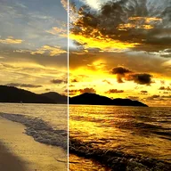

لیولز

ان پٹ بلیک/وائٹ پوائنٹس، گیما اور آؤٹ پٹ بلیک/وائٹ پوائنٹس کے ساتھ تصویر کے لیولز ایڈجسٹ کرتا ہے۔
لیولز سے طے ہوتا ہے کہ کون سی چمک خالص کالا اور خالص سفید بنے گی۔ شیڈوز کو گہرا کرنے کے لیے Input Black بڑھائیں اور ہائی لائٹس کو روشن کرنے کے لیے Input White کم کریں۔ Gamma کالے اور سفید کو چھوئے بغیر مڈ ٹونز بدلتا ہے۔ Output Black اور Output White آخری رینج کو محدود کرتے ہیں، تاکہ ہلکا/پھیکا لُک آئے۔
سیٹنگز
| سیٹنگ | قسم | رینج | ڈیفالٹ |
|---|---|---|---|
| ان پٹ بلیک | نمبر | 0 سے 1 تک | 0.1 |
| ان پٹ وائٹ | نمبر | 0 سے 1 تک | 0.85 |
| گیما | نمبر | 0.2 سے 5 تک | 1 |
| آؤٹ پٹ بلیک | نمبر | 0 سے 1 تک | 0 |
| آؤٹ پٹ وائٹ | نمبر | 0 سے 1 تک | 1 |